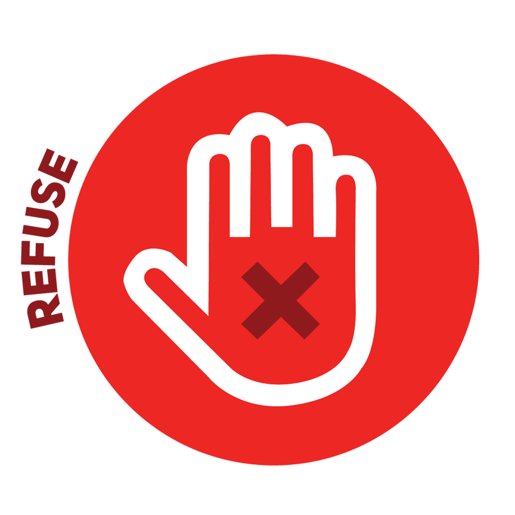
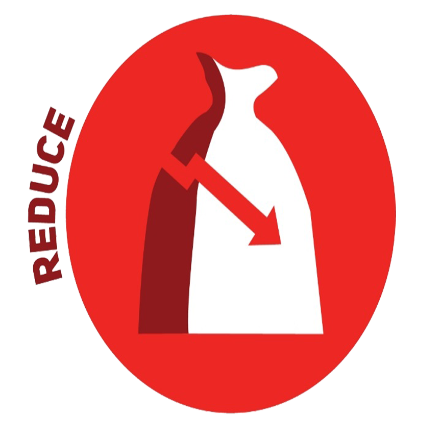
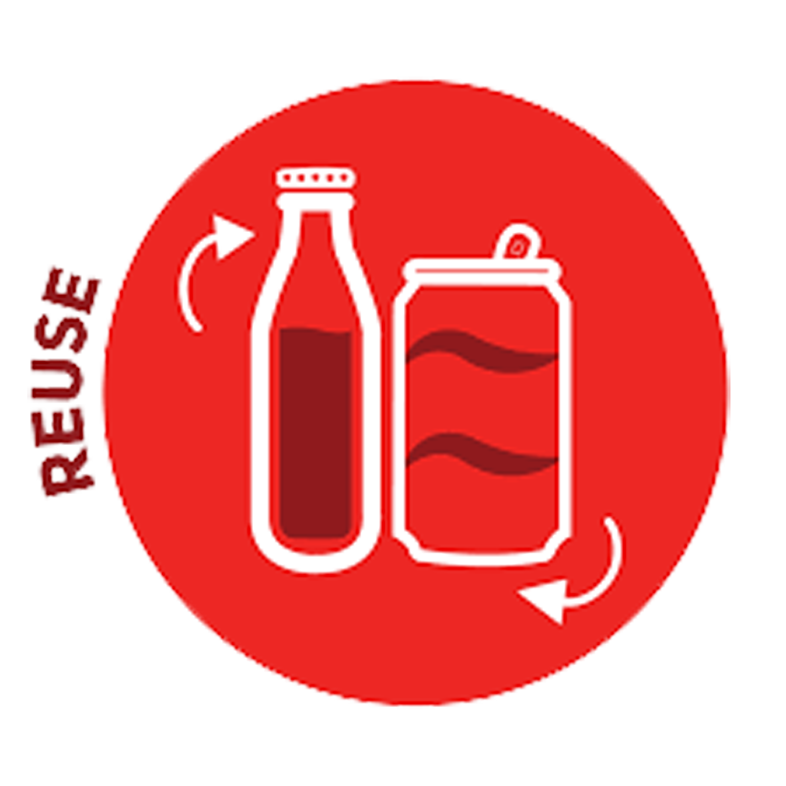
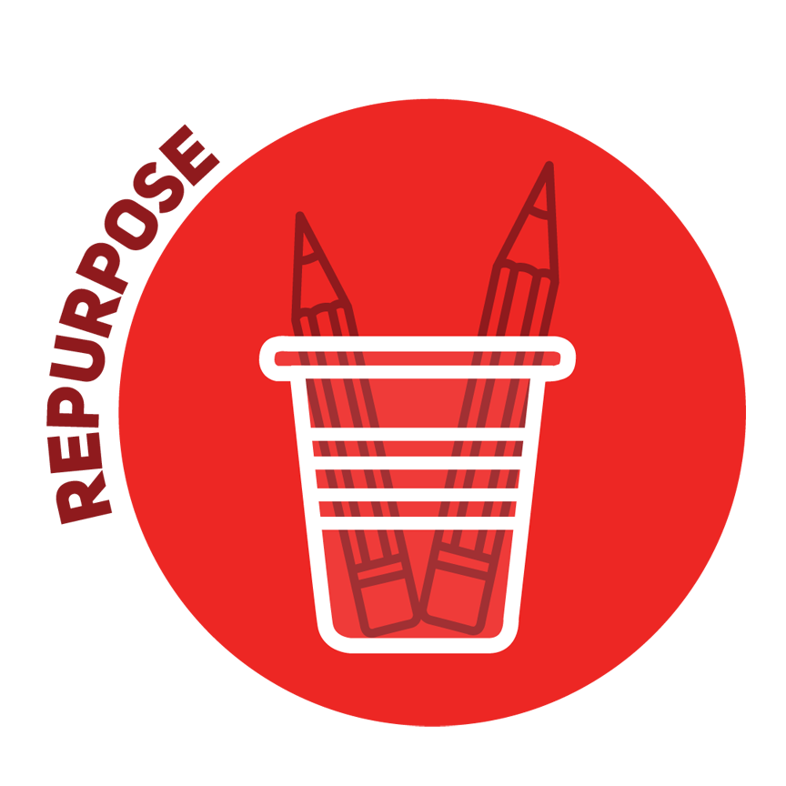
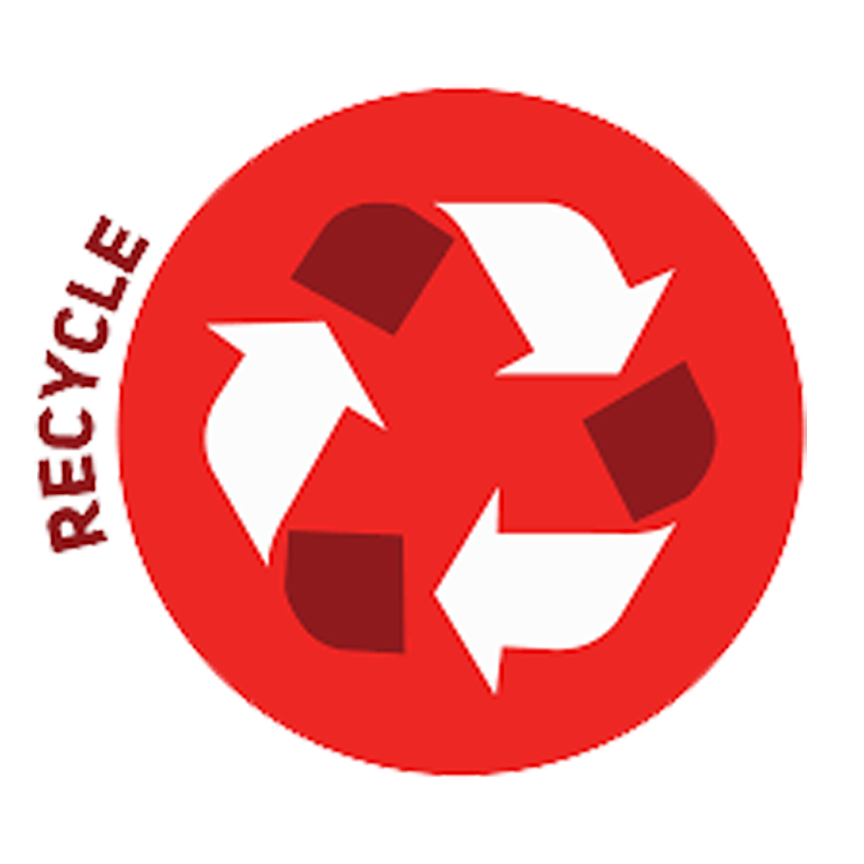

5'R PRINCIPLE
Step One: Refuse
The first step of the 5 R process. This can be a difficult one as you will have to practice refusing waste producion for your business, however it this will be the most effective way to minimise waste. How? Well, by simply refusing to use single-use plastics or wasteful, non-recyable products, you can ultimately reduce the amount of waste your business produce on the daily. Ideally you will want to talk to you procurement team to work out how you can approach this step most effectively. When you work with vendors or suppliers try to avoid working with necessary product packaging and attempt to opt for reusable or returnable packaging and containers. By making smarter buying decisions and setting efficeint standards early on in the process, this make it muck more easier for organisation to 'refuse' using waste that they don't ultimately need or would turn out wasteful.

Step Two: Reduce
This is all about reducing your use of harmful, waste ful and non-recyable materials to save you money, help the environment and so on. By limiting your dependency on these types of products, thi leads to less waste materials ending up in landfill and prevents you from creating negative impacts on the environment We would always advise using the minimal amount required to avoid excess waste as these material and energy could then be used for future requirements. Once good example would be when printing a document, print double-sided to slash your waste output in half. Other methods involve reduicn the amount of single-use plastics, plastic packaging and organic waste.

Step Three: Reuse
Single use plastics such as cups, straws, gloves and now masks have generated a 'throw away', 'one won't hurt' culture. The rate that we all consume plastic crisis have always been one of the world's biggest environmental challenges. In a race to reduce waste, businesses are prompted to reuse items in the workplace insted of replacing them. All you need to do is start by focusing on a particular area within you business at one time, for instance the work kitchen. Try to replace all the single use utensils and equipment for compostable and reuable options. Once you successful mater on environment in you business, find ways to reuse other products such as protective packaging, ink cartridges, food containers and even rechargeable batters

Step Four: Repurpose
If you can't refuse, reduce or reuse a particular item, try repurposing it instead. The 'green' community often refers to this method as 'upcycling'. You will quite often be surprised to learn how many everyda objects in the office can serve more than one purpose. Sometimes, it will involve some imagination and creativity, but there are limitless possiblities with upcycling common objects found in the workplace. Try using leftover cardboard boxes for storage, leftover cups and mugs as stationary holders and even using binder clips to hold together small wires. You could even designate a small space to an 'upcycling station' and here you can collect and store items that you can reuse for convenient purposed later on. Also, encourage you coleagues and visitors to leave behind their 'unusable items' and see what you can come up with to ensure they can still be effectively use.

Step Five: Recycle
Last, but not least at all, we have recycle! Once you've ventured throught all the other 'R's, recycling is the most eco-friendly waste disposal method. If your business doesn't recycle already, start by compiing cardboard, paper products, platics, glass and organics. A lot o companies when they start recycling are instantly surprised by the amound of waste they reduce by implemting and effective recyling program.
